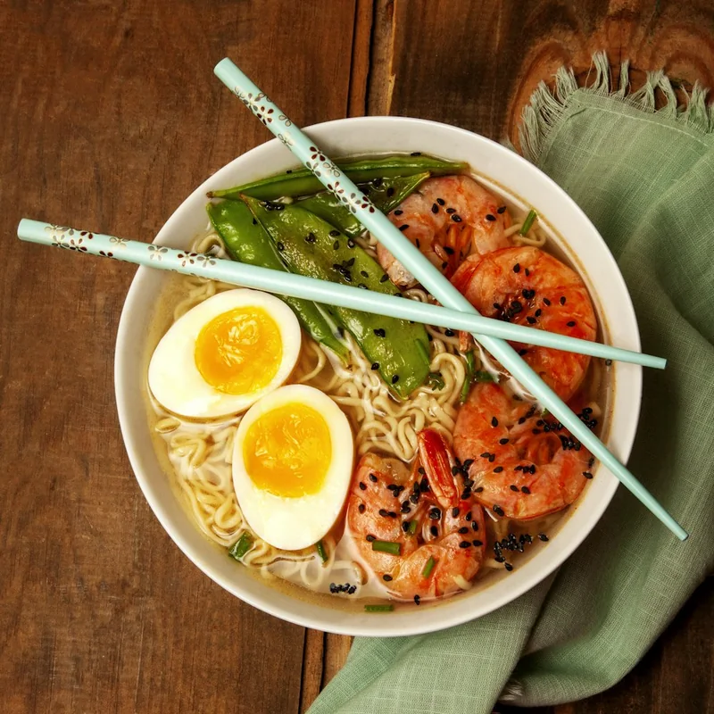

← back to case study ·
core design system (parent project) →
Design system addendum
Patterns added in v2 (critique round), v3 (logic & edge-state round), and v3.1 (audit round). The core system — palette, type, spacing, buttons, sheets — is unchanged and documented separately. Tokens shown here are the Toast direction.
Lifestyle selection chip v2
Default / selected
Vegetarian✓ Vegan
Single-select; tapping the active chip deselects (lifestyle is optional). Selection = ink fill, check glyph. Filters the feed — copy must always say so.
Label with the noun ("Vegan"), never "No meat" — lifestyle is identity, not exclusion.
Chip is a real button with aria-pressed. Selection is signaled by fill + check glyph, not color alone. Min target 44pt.
Allergy selection chip v2
Default / selected
Nuts✓ Nuts
Multi-select. Uses accent (terracotta), never ink — allergies are a different tier from taste/lifestyle and must look like it. Always followed by the kitchen-confirmation reminder.
Promise precisely: "excluded from your feed and search; saved dishes stay visible with warnings." Never "removed everywhere."
Check glyph + weight change accompany the color shift. Announce as "Nuts allergy, on".
Allergen warn chip v3
On photo tiles (saved / collections / restaurant)
! Nuts
Marks a saved/retained dish that conflicts with the user's allergy settings. Top-left so it never collides with sort/trending tags (bottom-left). Conflicting dishes are kept, never auto-deleted — accompanied by a list-level caption explaining that.
Name the allergen ("! Nuts"), not a generic warning.
"!" glyph carries the signal without color. Image alt includes "contains nuts".
Allergen conflict banner v2 · copy v3
Dish detail, direct open
!
Contains nuts
Excluded from your feed and search — you're seeing it because you opened it directly. Double-check with the kitchen before ordering.
Shown when a dish reached via save, collection, or shared link conflicts with an allergy. Sits above the trust card — safety outranks persuasion.
Three beats, always: what it contains → why you're seeing it anyway → confirm with the kitchen.
role="alert". Border + glyph + text; never color-only. Treat allergen data as prototype/best-effort — say so in Profile.
Trust & methodology disclosure v2 · v3
Default
94% would order again
131 verified diners · how we know
New — no score yet
too few repeat orders to be honest about a number
The anti-star-rating. "How we know" expands inline: repeat orders through Morsel handoffs within 90 days, never self-reported — plus a prototype-data note. Below a minimum sample the number is withheld entirely (cold start), never extrapolated. Status: proposed model, not operational fact — no order pipeline exists in the prototype; the repeat-order signal depends on unbuilt carrier integration, attribution, and consent plumbing, all open feasibility questions.
Sample size always visible. Methodology in one sentence. Abstention copy admits the limit plainly.
Ring graphic is decorative (aria-hidden); the stat reads as text. Disclosure is a real button, expanded state announced.
Availability status v2 · v3
Closed (restaurant hero) / sold out (dish) / disabled action
Closed now · opens 8 AMSold out today · usually back tomorrow
DirectionsOpens 8 AM
Status must disable the actions it invalidates: closed kitchens and sold-out dishes show a disabled primary that names the reason ("Opens 8 AM", "Sold out") instead of a dead "Order".
Always pair the negative with the recovery: when it reopens / usually back tomorrow.
Disabled buttons keep ≥4.5:1 text contrast on their label text; reason is in the label itself, not a tooltip.
No-carrier & handoff failure v2 · v3
No delivery apps
Not on delivery apps. A sit-down room — pick it up below, or go in person.
!
Couldn't open DoorDash
It may not be installed. Try again, pick another app, or grab it yourself — pickup never fails.
The order sheet never dead-ends: no carriers → pickup stays; a failed app-open shows an inline error with retry and keeps every alternative visible.
Blame the situation, not the user. Always end on the option that can't fail (pickup).
Failure banner is role="alert"; retry is a text button ≥44pt tall in the row.
Search-result label v2
Glass overlay, results only

Shoyu Ramen No. 4 · $17
Search results carry name + price on the photo; the browse feed stays photo-only. Rationale: searchers are comparing candidates, browsers are grazing. Same glass component as feed chrome.
Name · price. Nothing else — distance and % stay in detail.
Label is real text over a dark glass fill (≥4.5:1 on any photo).
Loading skeleton v3
Mirrors the real layout (hero block + staggered grid) so content doesn't jump on arrival. Shimmer only — no spinners, no logo pulses.
Container has aria-label="Loading dishes near you"; shimmer stops under prefers-reduced-motion.
Offline / location-off banner v3
You're offline. Showing your last loaded feed — prices and hours may be stale.
Location is off. Showing Shaw, our demo neighborhood.
EnableSet manually
Quiet sunken banners under the hero — informational, not blocking. Location-off offers both recoveries (system permission or manual entry). Offline warns about staleness rather than hiding content.
role="status", not alert — these don't interrupt. Actions are discrete buttons.
Zero-result preference recovery v3
No dish clears every rule right now
Vegan
! No nuts
within 0.5 mi
Clear browsing filtersEdit dietary settings
Names every active constraint, tier by tier, with a separate action per tier. "Clear filters" must never clear an allergy — dietary edits route to the safety screen deliberately.
State the cause, list the limits, offer one action per tier. Footnote that allergies are never cleared by shortcuts.
Constraint chips are a list with a label; allergy chips carry the "!" glyph.
Dynamic Type behavior v3
100% / 135%
Near you
Near you
All type classes scale through a single --ts multiplier (100–140% exposed in the prototype's Tweaks). Photo tiles keep their aspect ratio; text containers grow and wrap — chips wrap to new lines, buttons grow vertically, nothing truncates below 140%.
Maps to iOS Dynamic Type up to XXL. Glass labels and warn chips scale with --ts too; hit targets never shrink below 44pt.
Non-color indicators — summary v3
✓ selected! warning— insufficient data
Every state carries a glyph or border treatment alongside its color: selection = check, warning = "!", cold start = dashed. Active feed tab = underline + weight. This is the floor for any new component.
Verified against deuteranopia simulation; terracotta-on-cream also passes 4.5:1 for text ≥13px.
Order-sheet allergy acknowledgement v3.1
Warning + gate + locked option
!
Contains shellfish — an allergy you flagged
Ordering stays locked until you confirm below.
I understand this dish contains shellfish — unlock ordering
D
DoorDash
Locked — confirm the allergy notice above
When a dish that conflicts with a flagged allergy reaches the order sheet (saved dishes and direct links can), the dish-level warning is repeated at the point of commitment. Every delivery and pickup option is disabled until the diner explicitly acknowledges. The warning stays visible until the handoff completes or the sheet is cancelled; the acknowledgement never persists between sheets and is never pre-checked.
Name the allergen and its source ("an allergy you flagged"). The unlock line restates the substance — no generic "I agree".
Warning container is role="alert". The gate is role="checkbox" + aria-checked. Locked rows are true disabled buttons with the lock reason in their visible sub-line. No filter, reset, or "clear" action anywhere in the product can remove allergy rules.
Diet-aware empty search v3.1
Rules-empty (not inventory-empty)
No “burger” matches your current dietary settings
2 dishes exist on Morsel but are excluded by:
Vegan · lifestyle
! no dairy · allergy
Edit lifestyle preferences
Two different truths need two different answers: "we don't have it" (“Nothing for X yet” — reserved for genuinely absent inventory) versus "we have it, your rules exclude it". The rules-empty state names the query, counts the hidden matches, and lists exactly which rules excluded them — lifestyle chips neutral, allergy chips in warning treatment.
Only lifestyle gets an edit shortcut. Allergy rules are named but never offered as a one-tap removal — "Allergy protections are separate and always stay on."
The "!" glyph plus the · allergy suffix distinguish tiers without relying on color. Edit shortcut deep-links to the Diet & safety step, not a generic settings page.
Prototype-data label v3.1
Contextual + global
96% would order again
133 verified diners (illustrative) · how we know
From people who ate it · illustrative
Prototype: all diner counts, scores, save numbers, names, and quotes are illustrative seed data — not real customer evidence.
Every place the prototype shows evidence-shaped content — diner counts, trust percentages, reviewer names and quotes, save momentum — carries an (illustrative) or · sample data label in context, and a persistent global note sits under the device on every load. The "how we know" disclosure repeats the methodology caveat in full.
Label the data, not the feature: "133 verified diners (illustrative)" keeps the mechanism honest while marking the numbers as seed data. Never invent new metrics to fill space.
Labels are plain text in the same node as the number they qualify — screen readers hear the caveat with the claim, not after it.